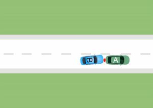

Verkeersrecht in één dag
Deze workshop Verkeersrecht (basis) is speciaal voor de startendeschadebehandelaars van verkeersschades van advies-, volmacht- en schaderegelingskantoren en verzekeraars. In verschillende werkvormen worden de relevante wetgeving en uitspraken van rechters en het Kifid besproken.
Er wordt gewerkt met verschillende werkvormen zoals, het beoordelen van stellingen, het beantwoorden van vragen en het uitwerken van casussen.
Artikelnummer . Bestellen en betalen gaat via de webshop op dfobv.nl.
Omschrijving
De ééndaagse opleiding Verkeersrecht is speciaal voor autoschadebehandelaars die werkzaam zijn bij advies-, volmacht en schaderegelingskantoren en verzekeraars en die hun kennis van het verkeersrecht willen vergroten of juist willen frissen.
WAT MAAKT DEZE OPLEIDING BIJZONDER?
De opleiding is compact en compleet en is specifiek gericht op de werkzaamheden van de behandelaar van verkeersschades. Aan de hand van ook door de deelnemers zelf in te brengen praktijkvoorbeelden, gaat Anita Hol-Bubeck in op de meest relevante wettelijke (basis)bepalingen en jurisprudentie behandeld. De opleiding is voor zowel de startende autoschadebehandelaar als de meer ervaren behandelaar, die zijn of haar kennis wil opfrissen!
Weet jij het antwoord op deze casus?

Twee personenauto’s, partij A en partij B naderen binnen de bebouwde kom een kruispunt met verkeerslichten. De voorste auto A lijkt door te rijden als het verkeerslicht oranje wordt, maar remt op het laatste moment toch af. Partij B kan niet meer op tijd remmen en rijdt achter op A.
Wie is aansprakelijk voor de ontstane schade?
Opbouw van het antwoord:
Partij B is de vermoedelijk aansprakelijke partij, omdat hij vermoedelijk onvoldoende afstand tot zijn voorganger heeft gehouden (overtreding van zijn plicht om voldoende afstand te houden art. 19 RVV) en heeft daardoor zijn auto niet tijdig tot stilstand kunnen brengen, wat geleid heeft tot schade aan zijn voorganger (en zijn eigen auto). B zal de schade aan zijn voorganger moeten vergoeden (en de schade aan zijn eigen auto moeten dragen).
Het vermoeden van schuld ligt bij de achterste auto en alleen als hij kan aantonen dat de voorste auto onnodig stopte (bijvoorbeeld spontaan stil ging staan op de snelweg) of remde (bijvoorbeeld voor overstekende eenden op de snelweg of voor een groen verkeerslicht), dan is hij misschien niet schadevergoeding plichtig en kan hij zijn eigen schade op de voorste auto verhalen.
Dit is maar één voorbeeld van wat er terugkomt tijdens onze nieuwe workshop Verkeersrecht.
MET WELKE KENNIS GA JE NAAR HUIS?
- Welke bepalingen in de Wegenverkeerswet (WVW), Regeling Reglement verkeersregels en verkeerstekens (RVV 1990) en het Burgerlijk Wetboek (BW) relevant zijn voor het vaststellen van aansprakelijkheid in het verkeer;
- De inhoud van artikel 185 WVW en de invullingen die er in de jurisprudentie aan zijn gegeven;
- De laatste ontwikkelingen zijn in de rechtspraak;
- Wanneer is wegbeheerder aansprakelijk is voor schade door een gebrekkige weg;
- Wat is er in de Wet aansprakelijkheidsverzekering motorrijtuigen (WAM) vastgelegd;
- Wat is de functie van het Waarborgfonds Motorverkeer en welke schade voor vergoeding door dit fonds in aanmerking komen;
- Welke bedrijfsregelingen kunnen van toepassing zijn op verkeersschades, zoals bijvoorbeeld Overeenkomst Vereenvoudigde Schaderegeling (OVS), Directe Schadeafhandeling (DSA) en de Schuldloze Derden-regeling.
WAAROM IS HET INTERESSANT OM DE OPLEIDINGSDAG BIJ TE WONEN?
- Er wordt gewerkt in kleine groepen, dus is er veel ruimte voor het stellen van vragen en interactie;
- Aan de hand van praktijkvoorbeelden en uitspraken wordt de theorie, wet- en regelgeving en jurisprudentie besproken;
- Je wordt beter in het toepassen, interpreteren en combineren van de wet- en regelgeving bij diverse verkeersschades en daardoor kun je beter argumenteren, verweren en beoordelen welke partij(en) aansprakelijkheid zijn in specifieke aanrijdingssituaties.
EXTRA NASLAGWERK!
Deelnemers ontvangen, naast de presentatie, gratis de Bureau DFO Reader Verkeersrecht(ter waarde van €49,50) en een afdruk van de relevante wetteksten.
DOELGROEP
Behandelaars van verkeersschades bij advies-, volmacht en schaderegelingskantoren en verzekeraars.
Wil je juist meer de verdieping ingaan? Kijk dan eens naar ons webinar over Artikel 185 WvW
DOCENT
Anita Hol-Bubeck
Passende opleidingen en masterclasses
Opleidingen van Bureau DFO
Praktijkgerichte trainingen, webinars en leergangen.
Verdiepingscursus Fiscaal Paspoort: van kunnen naar beheersen
Eerstvolgende: 9 dec 2026 · Hoevelaken
De meest relevante clausules in polisvoorwaarden zakelijk
Data en locaties: zie het opleidingsportaal
Schade Boost dag
Eerstvolgende: 19 nov 2026 · Hoevelaken